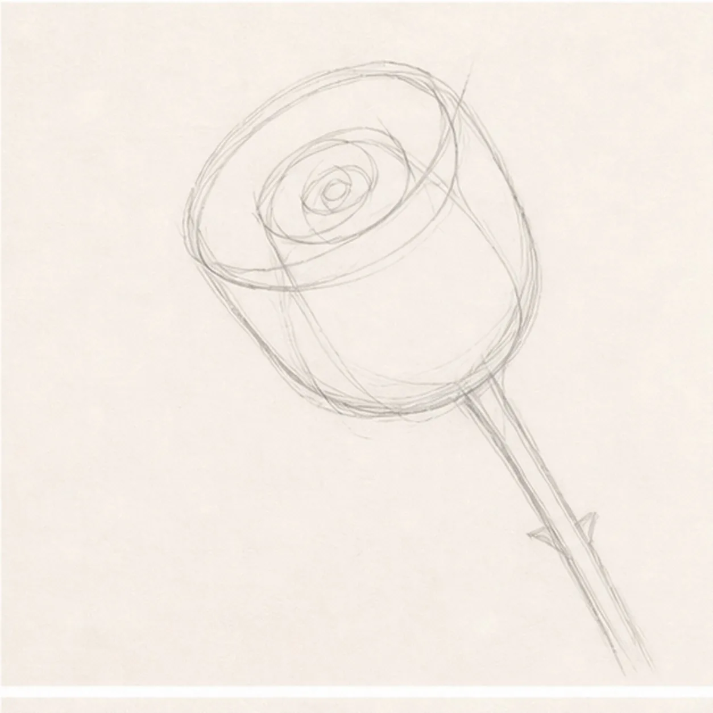
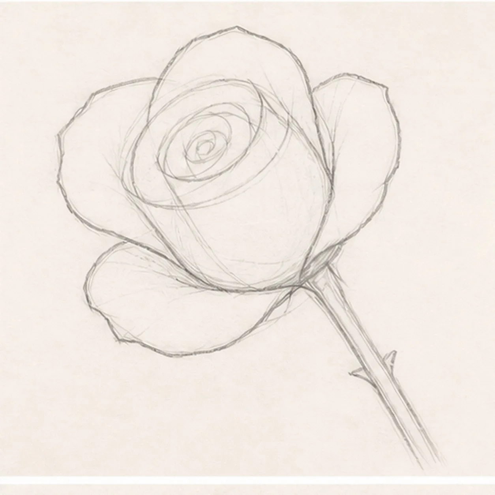
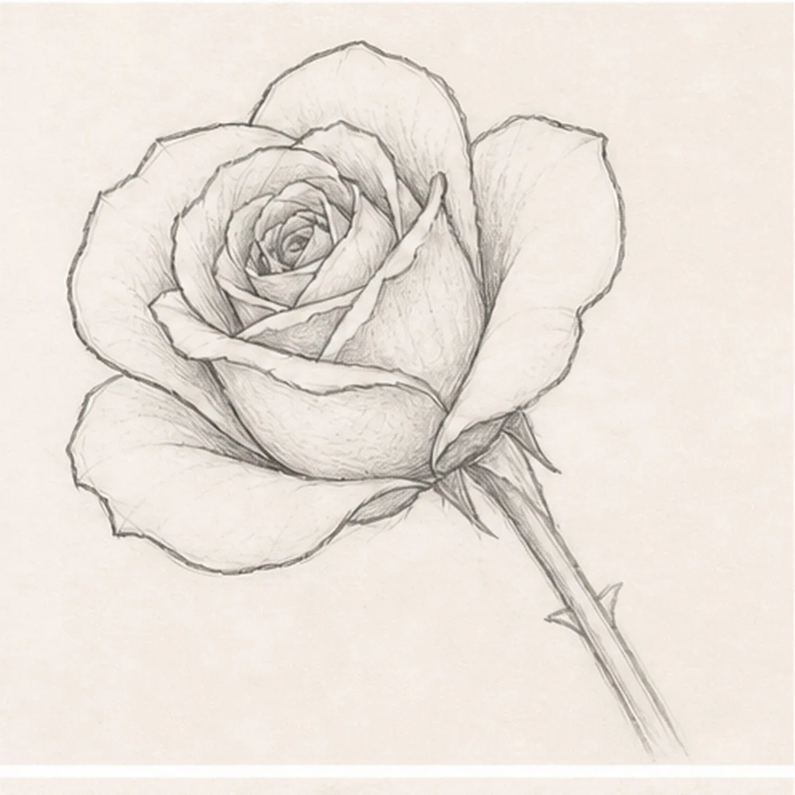
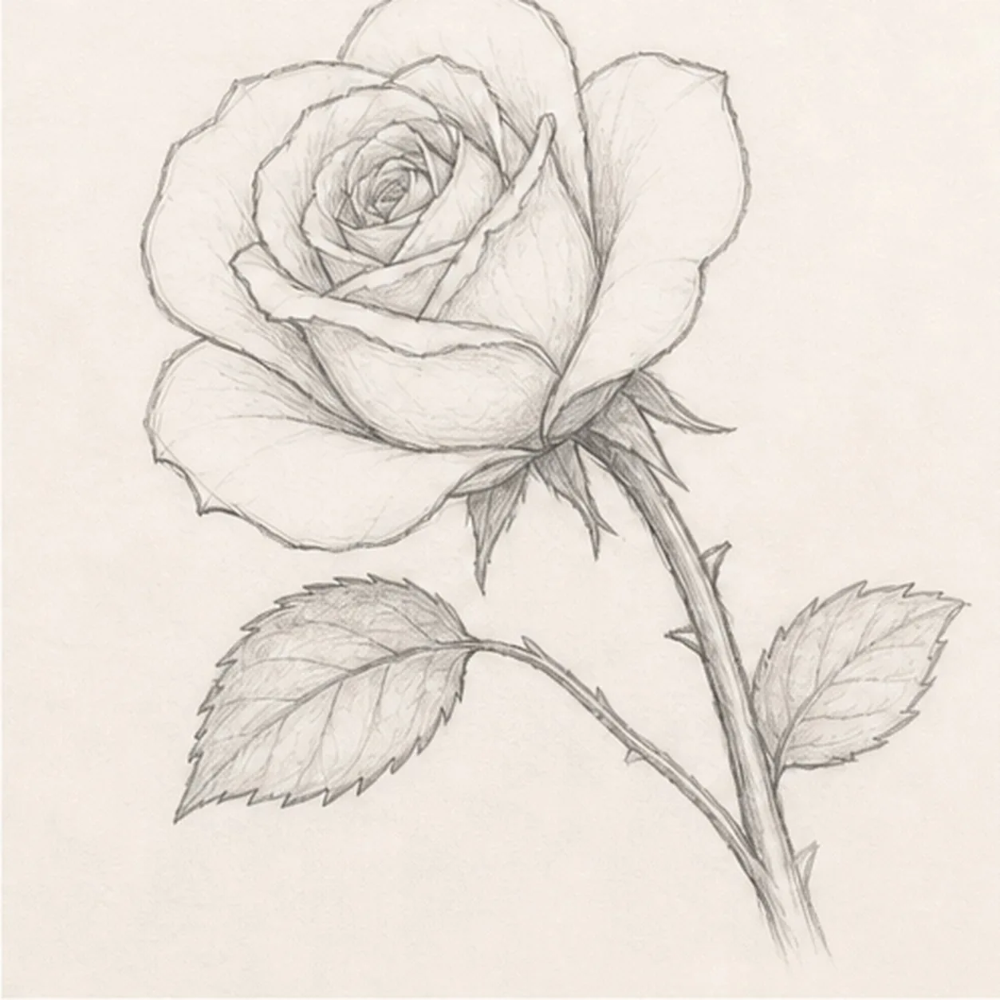
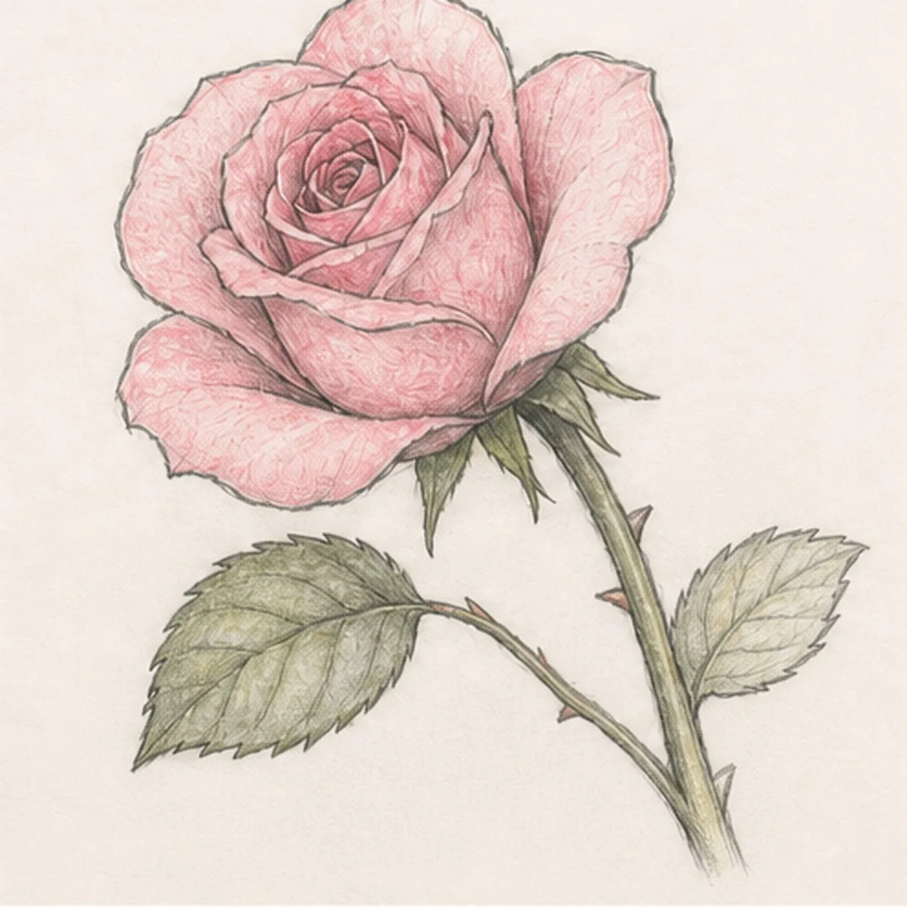

From the archive
Let's draw a garden rose in bloom
Treat this as one small practice round: build the subject lightly, notice the shapes, then darken only the lines that help the finished sketch.
-
01

Set the bloom angle
Draw a light diagonal stem gesture, place a tilted oval cup at the top, then add a small center spiral and a broad petal envelope.
Sketch tip: Ghost the stem and cup angle before touching down. Keeping those two guides related will stop the bloom from looking pasted onto the stem.
-
02

Open the outer petals
Build five broad outer petal contours around the reserved center and clarify the rose silhouette.
Sketch tip: Place the petal tips first, then connect them with relaxed curves. Compare the uneven paper gaps between petals instead of chasing perfect symmetry.
-
03

Layer the petal center
Add curled inner petals around the spiral and three front overlap folds, drawing only the petal edges that remain visible.
Sketch tip: Work from the center outward and break a rear line whenever a front fold crosses it. Those clean interruptions make the rose feel layered without extra shading.
-
04

Grow the stem and leaves
Add the pointed sepals, curved stem, two differently angled serrated leaves, and two tiny thorns.
Sketch tip: Mark both leaf tips before drawing their edges, then pull each center vein toward the stem. Feel free to vary the serration rhythm while keeping the two leaf shapes clear.
-
05

Shade the rose color
Add restrained rose-pink pencil to the petals, leafy green to the sepals, leaves, and stem, then place soft graphite in the petal pockets and beneath the flower.
Sketch tip: Follow each petal curve with light pencil strokes and leave small paper highlights along the turned edges. Build color in two pale passes instead of pressing hard at once.
-
06

Finish the rose sketch
Strengthen the keeper contours and clarify the established petal overlaps, stem, leaves, thorns, restrained colors, and cast shadow.
Sketch tip: Squint once to check that the bloom reads first and both leaves remain visible. Stop before adding a vase, extra blossom, insect, or decorative border.